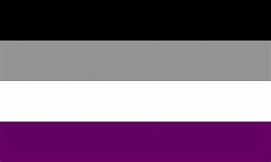
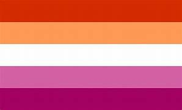
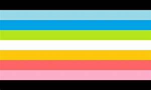

| ASEXUAL mas información |
Una persona que no experimenta ninguna atracción sexual por nadie. |
 |
| LESBIANA mas información |
Este adjetivo se utiliza para las mujeres que se sienten románticamente, físicamente y emocionalmente atraídas por otras mujeres. |
 |
| QUEER mas información |
Se relaciona con una identidad sexual o de género que no corresponde a las ideas establecidas de sexualidad y género. |
 |
| ARROMÁNTICO mas información |
Una persona que no experimenta ninguna atracción romántica hacia nadie. |
|
| ANDROSEXUAL mas información |
Los androsexuales se sienten sexual, romántica o físicamente atraídos por la noción general de la gente masculina.
Una persona androsexual podría sentirse atraída por alguien que simplemente se ve como un hombre. |
 |
| GINOSEXUAL mas información |
Quien se siente románticamente y físicamente atraída por la feminidad.Una persona ginosexual puede sentirse atraída por una persona que simplemente se ve como una mujer. |
 |
| BICURIOSO mas información |
Al igual que la Q en LGBTQIA+ también significa cuestionamiento, a los bicuriosos les gusta explorar si les atraen o no las personas del mismo o del género opuesto. |
 |
| DEMISEXUAL mas información |
Las personas demisexuales están al borde de la asexualidad, excepto que sólo experimentan cualquier atracción sexual después de formar una profunda conexión emocional o romántica con su pareja. |
 |
| POLIAMOROSO mas información |
Una persona poliamorosa está consensualmente involucrada sexual y románticamente con múltiples parejas al mismo tiempo. |
 |
| SKOLIOSEXUAL mas información |
Las personas skoliosexuales se sienten física, romántica y sexualmente atraídas por las personas de género, transgénero y no binarias. |
 |
| OMNISEXUAL mas información |
Al igual que los pansexuales, los omnisexuales se sienten atraídos por todos los géneros, pero no se les considera ciegos a los géneros. |
 |
| TRANSEXUALIDAD mas información |
La transexualidad hace mención a aquellas personas que sienten haber nacido en un cuerpo biológico equivocado y manifiestan emocionalmente sentirse que no pertenecen al sexo que poseen. |
 |
| ANTROSEXUALIDAD mas información |
una atracción física, sexual y romántica hacia cualquier tipo de persona sin importar si es heterosexual, bisexual, homosexual o transexual, la diferencia de las personas antrosexual es que desconocen en sí mismo cuál es su orientación sexual. |
 |
| SAPIOSEXUALIDAD mas información |
una atracción física, romántica y afectiva por aquellas personas, siendo hombre o mujeres, que muestren una gran capacidad intelectual. |
 |
| GRAYSEXUALIDAD mas información |
Son aquellas personas que se encuentran en una situación límite entre la sexualidad y la asexualidad, es decir, pueden pasar grandes periodos sin mantener actividad y contacto sexual pero si tienen el deseo sexual pueden realizar la conducta sexual. |
 |
| AUTOSEXUALIDAD mas información |
Este tipo de sexualidad se da cuando alguien sólo puede excitarse sexualmente consigo mismo. Se satisfacen sexualmente masturbándose y no sienten deseo sexual por nadie más. |
 |
| HOMOFLEXIBLE mas información |
Aquellos que son homoflexibles pueden sentirse atraídos principalmente por su propio género, sin embargo, a veces también sentirán atracción sexual por el género opuesto. |
 |
| HETEROFLEXIBLE mas información |
Es cuando alguien normalmente tiene deseos heterosexuales pero ocasionalmente se siente atraído sexualmente por personas de su mismo sexo. Sus deseos heterosexuales son flexibles. |
 |
| AGÉNERO mas información |
En este caso, el agénero es aquella persona que no se identifica con ningún género. Su identidad sería destacada como nula. |
 |
| LITHSEXUAL mas información |
Las personas con este tipo de orientación sexual experimentan atracción hacia otras personas, pero ciertamente no tienen la necesidad de ser correspondidas ni busca que el deseo sea recíproco. |
 |
| TRANSGÉNERO mas información |
Persona cuyo género no coincide con el que te fue socialmente asignado al nacer. Así, los agéneros, los bigénero, los pangénero, los andróginos, los transexuales o los travestis entrarían dentro de los transgénero. |
 |
| POLISEXUAL mas información |
Parecido a la pansexualidad, una persona polisexual puede sentirse atraída por algunas personas de distinto género o distinto sexo, pero sin que todos los sexos o géneros atraigan de la misma manera o al mismo nivel. |
 |
| CUPIOSEXUALIDAD mas información |
Personas que sienten el deseo de querer estar en una relación sentimental o sexual, es decir, sólo atracción sexual o sólo atracción sentimental. Puede darse el caso de que ambas atracciones se encuentren presentes. |
 |
| RECIPROSEXUALIDAD mas información |
Falta de atracción hacia una persona hasta que ésta, le dice que tiene sentimientos por él/ella. |
 |
| ABROSEXUALIDAD mas información |
Se refleja en la fluidez de la sexualidad, o el hecho de estar cambiando la atracción sexual y sentimental hacia una persona de sexo opuesto o del mismo sexo. |
 |
| FREYSEXUALIDAD mas información |
La atracción hacia una persona va decreciendo a medida que se apega más a esa persona. |
 |
| APOTHISEXUALIDAD mas información |
Sentimiento de negación hacia el acto sexual debido a que se piensa que es inmoral, también pueden existir otras razones. |
 |
| INTERSEXUALIDAD mas información |
La intersexualidad abarca a personas que tienen discrepancia entre sus genitales y su sexo, es decir, en estas personas no existen características genéticas de hombre y mujer. |
 |
| GÉNERO FLUIDO mas información |
La persona siente que no pertenece a un género concreto, sino que su identidad de género fluctúa por periodos. |
 |
| HIPOSEXUALIDAD mas información |
La hiposexualidad es prácticamente lo mismo que la asexualidad. La diferencia es que mientras que un asexual lo es por razones desconocidas, un hiposexual siente esta falta de atracción sexual hacia las diferentes clases de sexo o tipos de género debido a que sufre de una condición médica específica, como puede ser un exceso de estrés. |
 |